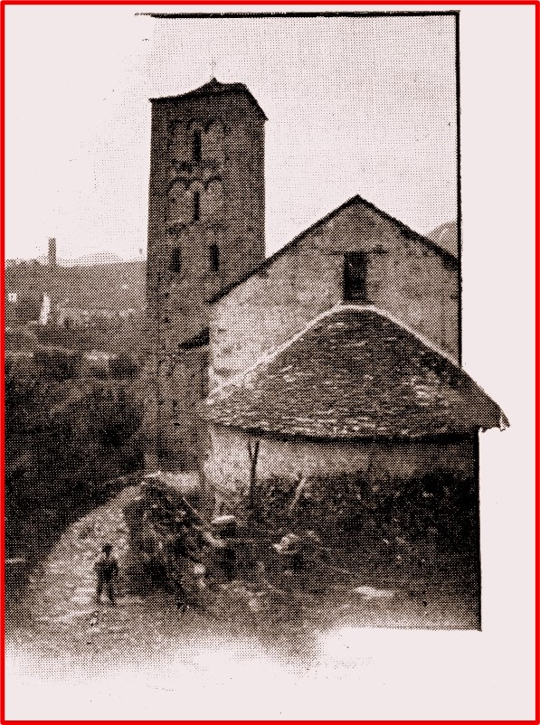

Pieve Romanica di Santa Maria Assunta
di Giovanni Destefanis
Alla cara memoria di Don Bernardino Oberto
Alla mia preziosa famiglia
Ai miei alunni di sempre, a chi mi onora della sua stima ed affetto
Alla gente di Cortemilia
Giovanni Destefanis - 2025
Premessa
Della Pieve della Madonna Assunta in Cortemilia non ho memorie personali in cui essa si presentasse diversa da come la vediamo oggi. Da scolaro trapiantato dalla natia Langa di Gorrino a Cortemilia per le Scuole Medie, e da assiduo chierichetto, con diversi altri mei coetanei, di San Pantaleo, ricordo nitidamente le messe mattutine dei sabati di maggio, che ci dovevano lasciare il tempo per tornare a casa, fare colazione, e andare a scuola al Convento.
Servivamo messa a monsignor Michele Sampò o al curato don Bernardino Oberto (che ricordo entrambi con venerazione, e il secondo anche con affetto). Rispondendo in latino. E stando bene attenti a non sbagliare, con una certa ansia, al momento di spostare il messale dal “cornus epistulae” al “cornus evangelii” e viceversa, a quello di portare e versare le ampolline, al campanello per l’elevazione – si chiamava così…- e a raccogliere diligentemente le offerte dei fedeli, e allora la chiesa era sempre gremita.
E poi c’era l’importante, attesa, processione votiva dell’ultima domenica del mese, con le fiaccole, candele con un cartoccio di carta oleata che bisognava stare attenti a non far incendiare. Le processioni si fanno ancora oggi, ma quelle di allora avevano un senso particolare, un momento di aggregazione di confronto di emulazione. Il senso profondo di quella devozione forse a noi piccoli sfuggiva, prevalevano altre sensazioni, altri sentimenti…Un breve excursus un po’ nostalgico su ricordi ancora infantili, a cavallo tra gli anni ’50 e ’60 del secolo passato, per dire che già la Pieve era così, almeno al suo interno.
Fuori, specie nella zona dell’abside, per molti anni ancora sarebbe stata invasa da rampicanti, erbacce, canne, pertiche per il vigneto soprastante che arrivava a lambire gli antichi conci di arenaria ben lavorati del tutto simili a quelli della torre del castello. E come quelli ammorbiditi da secoli di pioggia, neve, vento, geli e calure. Una Pieve allora piuttosto rustica, molto rurale. A me che venivo dalla Langa e da Gorrino, molto rurale anch’io nonostante tutto, non faceva una grande impressione.
Ed in effetti riflettendo spesso sul come e sui possibili perché la Pieve si presenti ora così come la vediamo, per una mia ormai antica ed amata consuetudine, direi quasi di simbiosi con quell’edificio, viene da considerare che essa potrebbe avere la forma di un rebus, di quelli senza lettere guida. O di un puzzle dove nel tempo molte tessere sono volate via, rese introvabili.
La Pieve è vissuta a lungo. Se non proprio la chiesa così com’è ora o come poteva apparire recentemente, il sito sacro ha superato senz’altro il millennio. E in questo millennio o più, che stabiliamo anche per una semplificazione, un po’ come capita a tutti gli edifici di culto, si è andati avanti per aggiunte e sottrazioni. Qui più che altrove, forse, prevalgono le sottrazioni. Della Pieve, per poco che si osservi, colpisce più quello che non ha, o non ha più, di quel che ha. Uno sguardo, una visita superficiale, prendono atto dell’esistente, della bellezza talora suprema di certi particolari, del significato profondo di altri ma, giustamente, non possono soffermarsi, concentrarsi su quanto della sua storia, complessa ed intricata, ci possono trasmettere la facciata con il suo prezioso benché incerto gotico e con le tracce ormai evanescenti delle sue decorazioni sull’intonaco; l’abside, le sopraelevazioni, i muri interni davvero così spogli, polverosi, la volta la tribuna, il presbiterio, l’altare….
La Pieve spesso ci suggerisce l’impressione di un cantiere più volte iniziato, mai finito, molte volte ripensato ma con ripensamenti inconclusi, ed attualmente in sospeso. Ma è difficile che sul nostro “monumento” si possa immaginare di intervenire ancora, se non per riparare, conservare, evidenziare l’esistente. Esso è lì. Quel che può dire lo dice a chi riesce a sentirlo o a leggerlo. Naturalmente occorre qualcuno in grado di leggere e ascoltare. Non potrei certo biasimare un “viaggiatore solitario” che, dopo esservi entrato per la prima volta, uscisse dalla chiesa un po’ deluso.
Mi illudo che queste poche pagine potrebbero attenuare la sua delusione.
Un piccolo lavoro che non ha né può avere pretese archeologiche, e neanche di esaurire o almeno sistematizzare la storia dell’edificio. Ha lo scopo, minimale, di raccogliere quelle che io ritengo essere le possibili osservazioni e riflessioni, partendo appunto da ciò che si vede ora e dalle notizie disponibili, racconti anche orali, qualche documento dei molti che sicuramente si trovano sparsi in archivi, cancellerie, depositi, ecclesiastici e civili. E sicuramente in pubblicazioni che io ignoro.
Se vogliamo una specie di “guida”, di “voyage autour…” non “de ma chambre” ma di un luogo molto amato dalla gente di Cortemilia, meta privilegiata di moltissimi visitatori del paese. Suggestivo e affascinante, praticamente in tutte le ore del giorno e della notte e in tutti i giorni dell’anno.
Altri, naturalmente, hanno già scritto della Pieve, sia pure, che mi risulti, non in modo monografico: studiosi “veri”, archeologi, esperti d’arte, cultori di storia ecclesiastica e di devozione popolare. Non voglio rubare il mestiere a nessuno di essi, non ne sarei capace, e lo dico senza false modestie. Questo non vuole né può essere un lavoro storico -ho un grande rispetto per la storia, che è una disciplina innanzitutto scientifica, e per gli storici-. Il mio è un racconto, una descrizione, una guida che ammette a priori superficialità, errori, abbagli, cantonate. Ma con qualche segreta speranza -mi piace dirlo - che da queste righe, cantonate comprese, possa nascere in qualcuno lo stimolo di fare molto di più e molto meglio.
Non mi sono soffermato, infine, sui significati propriamente religiosi e spirituali di questo edificio, su ciò che, coerentemente con la fede di ciascuno, esso ha suggerito nei secoli e suggerisce oggi all’interiorità dei credenti. Le celebrazioni liturgiche -che ancora vi si svolgono- invitano all’unità e alla pace: auspico che tutti, credenti e laici, siamo in grado di farne tesoro e modello di comportamento.
Nel corso del testo ho riportato in nota alcuni documenti, utilizzati come fonti. Qui desidero citare, anche come esempio di “prodotti” storicamente significativi i due lavori di Walter Accigliaro che più direttamente trattano la nostra Pieve:
- Pievi e chiese dell’antica Diocesi di Alba nel “Registrum del 1438”, Centro Culturale San Giuseppe, Alba, 2017
- Cortemilia. Dall’antico villaggio del Cheronzio a Monte Oliveto, Edizioni Langhe Roero Monferrato, 2023 - Opera realizzata nell’ambito del progetto dell’Ecomuseo dei Terrazzamenti e della Vite con il contributo del Comune di Cortemilia.
La Pieve

Come per molte “Pievi” o “Plebanìe” dell’Alta Italia, anche per quella di Cortemilia si può supporre un'origine (almeno di collocazione cronologica, se non di struttura) attorno al V-VI secolo. Di solito di ridotte dimensioni e piuttosto lontane dal centro dell'agglomerato urbano – per distinguere e definire meglio lo spazio del “sacro” e delle competenze ecclesiastiche rispetto al “profano” dei poteri signorili o civili - le Pievi costituivano appunto il luogo di culto destinato al popolo, anche quello delle campagne. Erano talora edifici o anche soltanto “siti” molto semplici, nei quali tuttavia doveva avere posto almeno un fonte battesimale e uno spazio sufficiente alla celebrazione dei riti connessi e successivamente dell’Eucarestia.
In taluni casi il sito scelto per la “Pieve” corrispondeva a quello di are o piccoli templi pagani, per la necessità di sostituire e di cancellare i relativi culti, non senza lunghi adattamenti, contraddizioni, tenaci persistenze rituali. Anche la scelta dell’orientamento Est-Ovest, lungo la linea equinoziale, pure spesso conservata nelle chiese cristiane, aiuterebbe l’ipotesi di origini precristiane del sito sacro. Ciò che si evidenzia meglio nell'edificio di oggi sono la torre campanaria e l'abside, nettamente romanici, una preziosa bifora sulla facciata di epoca più tarda (gotico lombardo) e un bassorilievo interno raffigurante la Madonna in trono con il Bambino e altre figure. Cercherò di evidenziare, illustrare alcuni dettagli, proporre osservazioni e suggerire ipotesi. Per meglio comprendere…
L’interno e le Date

Diversi rimaneggiamenti sono stati realizzati nei secoli all’interno e all’esterno dell’edificio: ampliamenti, soprelevazioni, creazione e successiva tamponatura di porticati, di archi, un tribuna in mattoni tra XVI e XVII secolo, etc. L’osservazione dell’interno dell’unica navata, priva di intonaco alle pareti e in buona parte della volta, ma anche di certi aspetti dell’esterno, pone diversi e talora inestricabili interrogativi, soprattutto su quella che è una evidente e radicale disomogeneità tra i due estremi (facciata e abside) chiaramente medioevali, tra romanico e gotico, tra ‘200 e ‘300 e il corpo mediano, con i suoi enormi archi tamponati a cui si sovrappongono lesene sei/settecentesche, finestre chiuse e modificate, altri aspetti che di medioevale non hanno alcuna traccia evidente.
Viene quasi da figurarsi un’ipotesi al limite della “fanta-archeologia” o “fanta-architettura” e cioè che in un momento imprecisato della sua storia, ma probabilmente tra la fine del 500 e la fine del 600, sia stata compiuta un’operazione arditissima, ossia uno “smontaggio” della finestra e del portale e un loro spostamento in avanti di diversi metri, dopo la sigillatura di quello che poteva essere un ampio porticato, un pronao o addirittura un corpo separato rispetto alla chiesa retrostante (1).Nuova facciata, rimettendo a posto con cura gli elementi della vecchia, costruzione della tribuna in mattoni e “configurazione” dell’aula come la vediamo adesso. Sotto: l’altare del 1956 e particolare interno dell’abside.

Merita ancora qualche osservazione la grande apertura ad arco con un accenno di armatura in mattoni sul culmine, tamponata rozzamente con pietrame di risulta, che si vede alla destra dell’altare.
Una vistosa “cicatrice” nella muratura regolare in grandi pietre accuratamente tagliate della parte inferiore dell’abside e del presbiterio, che pure fa vedere altre interruzioni ed anomalie. Una tradizione locale parla di “arco napoleonico”, un passaggio ottenuto distruggendo, non senza una qualche maligna perizia, un ampio tratto di muro, proprio lì, per far entrare nella Pieve, ridotta in quell’epoca turbolenta a magazzino e stallaggio, cavalli, carri ed altro.

Non è impossibile che sia quella la vera origine dello sfondamento, che tra l’altro dimostra come il livello del suolo attorno alla chiesa fosse notevolmente più basso dell’attuale, innalzato successivamente dalla discesa di frane e dall’apporto del vicino torrente Cheronzio (più recentemente denominato “Rio Madonna”, o “della Madonna”). Ma non è neppure impossibile che l’arco non sia opera di rivoluzionari e di soldataglie iconoclaste e sacrileghe, ma uno degli elementi di degrado e di cattivo uso osservati nel 1585 dal visitatore apostolico (di cui si parla più avanti) che proibì l’esercizio del culto nella Pieve, o meglio, le tolse il beneficio parrocchiale. È la forma a suggerirlo, un arco molto ampio, sub ogivale, ma sostanzialmente regolare, ottenuto scalpellando le pietre originarie, come se in chi lo aprì vi fosse stata l’intenzione di creare una nuova e più efficace apertura, dato che, a quanto dicono la tradizione e i documenti, vi era, tra gli altri, un problema di capienza.
Ho scritto prima della notevole differenza tra il livello della base interna del varco e quello esterno del terreno: non sembra probabile che l’innalzamento sia avvenuto in appena un secolo, quello che separa gli eventi napoleonici dalle prime fotografie della Pieve del tardo Ottocento, e questo farebbe pensare a un’origine più antica dell’apertura, forse di centocinquanta, duecento anni. Anche in questo caso lasciamo aperte le ipotesi. Negli anni '40 sono stati eseguiti gli ultimi lavori importanti, tra cui l'abbattimento del pronao che occupava la larghezza della facciata e la ridipintura parziale dell'interno, poi quasi completamente de intonacato (tranne la volta del presbiterio) negli anni '70 del '900. L'altare in marmo policromo è recente, un ex-voto parrocchiale del secondo dopoguerra (1956), come adempimento di un voto per la protezione di Cortemilia dalle devastazioni della guerra(2), anche se di fatto il paese ebbe molti caduti e vittime civili e perse il suo imponente ponte di ferro sulla Provinciale, manufatto di grande interesse tecnico-ingegneristico.
Da tutto ciò che abbiamo più o meno adeguatamente esposto, a proposito di modifiche ed ampliamenti, sopraelevazioni, soffitti ed altro, ci si potrebbe chiedere per quali motivi molti di questi interventi sembrino e siano di fatto decisamente posteriori alla fine del XVI secolo, a quel 1585 in cui la Pieve cessa di essere la parrocchiale unica, e la chiesa matrice dell’ampio circondario. In realtà la chiesa rimane un importante luogo di culto, meta di pellegrinaggi, presente nella devozione popolare, non solo strettamente locale, un “santuario” anche se non canonicamente definito in questo modo. Per secoli segnò ancora un punto cardine del passaggio sulla riva destra della Bormida, sino almeno all’alluvione del 1878 che spezzò definitivamente la continuità del percorso, interrompendolo alla borgata Olla.
Nella foto la falesia di arenaria lungo la riva destra: alla base, dove si vede uno strato di roccia più chiaro e sporgente, passava l’antica via di fondovalle.
Sino a quell’epoca il principale percorso dalla bassa Valle Bormida incontrava la Pieve prima di entrare nell’abitato, sino alla fine del ‘600 e forse ancora oltre, circondato da mura. L’edificio sacro è stato fortemente al centro dell’interesse della popolazione e elle autorità religiose locali: possiamo certamente immaginare che per almeno tre secoli la capienza e il decoro, la funzionalità liturgica abbiano continuato ad essere considerati requisiti fondamentali, su cui intervenire, per migliorarli ed adeguarli ai tempi. Con alterne vicende e non senza conflitti anche aspri.
Come esempio di questo interesse pubblico per la Pieve, riporto, in Appendice un interessante documento del 1677, presente nell’Archivio Comunale di Cortemilia: la cittadinanza, tramite i suoi capi, i “sindici”, rivolge un’istanza al vescovo di Alba, all’epoca Vittorio Nicolino dalla Chiesa perché richiami l’arciprete di allora, Ottavio Scarampi, al suo obbligo di contribuire per la metà dei costi ai lavori di riparazione e manutenzione degli edifici sacri. In particolare in esso si dice che una parte della chiesa della Pieve è crollata (ruinata) e che sono necessari interventi urgenti, ma l’arciprete non ne vuole sapere. Il vescovo risponde lapidariamente che devono essere osservati i decreti in essere e che quindi, par di capire, lo Scarampi deve fare la sua parte. Il documento mostra, al di là della specifica materia del contendere, il vivo interesse popolare per la Pieve, a quasi cent’anni di distanza dalla perdita del beneficio parrocchiale. Anche in questo caso si suppone che le riparazioni, che ci furono, non tennero conto non solo di un’unità “stilistica”, come la intendiamo noi adesso, per la quale non è esistito per secoli un vero interesse (ecclesia de plebe), ma anche di decorazioni e “illustrazioni” interne, quali gli affreschi che certo non poterono mancarvi ma che probabilmente vennero sacrificati ad altre più urgenti esigenze, o non ripristinati né rifatti se perduti.
È invece rimasto del tutto intatto nelle sue nitide e originali forme romaniche il bel campanile, il “pezzo” più antico di tutta la Pieve. Di pianta quadrata, non grande in altezza ma di armoniosi rapporti volumetrici, riprende negli archetti pensili, distribuiti su cinque registri o fasce, due inferiori e tre superiori, e nelle strette finestre verticali (claristori) un modello ricorrente che si trova, in proporzioni e dimensioni diverse, in campanili coevi, quello del Duomo di Acqui, quello (originale) del Duomo di Alba e diversi altri. Conserva, come molti altri campanili, le “buche pontaie” che possono, anch’esse, dirci qualcosa delle tecniche costruttive usate dai muratori della nostra Langa antica.
Giovanni Martina in “Cortemilia e le sue Langhe”, Ghibaudo, 1951 (rarità bibliografica quasi introvabile) riporta una notizia secondo la quale all'interno della Chiesa, su un pilastro, sarebbe stata rinvenuta la data 432 (si suppone in cifre romane: CCCCXXXII, oppure CDXXXII), incisa su un concio in pietra di un muro laterale, ciò che potrebbe confermare l'origine molto antica di cui si dice sopra. La stessa notizia è presente in una pubblicazione in formato di giornale (4 pagine in carta azzurrina) edita per il Congresso Eucaristico del 1946. Qui si trova anche una digressione storica sulle origini del cristianesimo a Cortemilia(3), che risalirebbero addirittura ad un’epoca precostantiniana ma senza alcun appoggio archeologico o documentale, e contrario alle evidenze storiche sin qui raccolte.
Riporto il passo dell’articolo “Gli inizi della fede in Cortemilia” del Numero Unico stampato presso la Pia Società San Paolo di Alba per il Congresso Eucaristico Diocesano che si tenne in Cortemilia il 22, 23 e 24 Agosto 1946.
“Salito al trono Costantino venne pace per la chiesa e i Vescovi Milanesi eressero in tutte le regioni dell’Italia settentrionale una sede episcopale. Così ad Alba fu posto vescovo san Dionigi, il quale come tutti gli altri vescovi ordinò molti Sacerdoti, eresse molte parrocchie, affinché la vita e il verbo di Dio potessero giungere a tutte le anime. A provare che la fede fu portata molto anticamente in Cortemilia sta il fatto che demolendo il coro della chiesa madre della Pieve, fu scoperta una cappella sotterranea costruita al modo delle antiche cripte in cui i primi cristiani, durante le persecuzioni, celebravano i S. Misteri e dove si radunavano i fedeli ad ascoltare la parola di Dio e a ricevere i SS. Sacramenti. Si può presumere che l’adito a questa cappella fosse unico, segreto, scavato nel terreno e si trovasse dalla parte della casa parrocchiale di quel tempo, posta sotto la ripa del Monte Oliveto che lì terminava. La cappella era coperta di pietre quadrate ed era illuminata da due finestre oblunghe poste ai lati dell’Altare. Questa cappella col crescere del numero dei fedeli e della libertà data da Costantino alla Chiesa fu trasformata a poco a poco in una chiesa e successivamente ampliata. Tutto questo lo deduciamo:
- da una pietra posta sull’arco che chiudeva anteriormente detta cappella recante l’iscrizione ANNI-DMI-MLCcCi, che dopo la restaurazione del 1363 si può vedere nell’angolo destro della volta.
- da un’altra iscrizione posta all’angolo sinistro dello stesso arco e recante l’anno 462.
- dal vaso di pietra a forma di conca collocato vicino alle porte di detta chiesa il quale secondo gli scrittori delle antichità ecclesiastiche e specialmente secondo il Card. Baronio nei suoi Annali serviva a contenere l’acqua lustrale oppure acqua destinata all’abluzione delle mani per chi entrava in Chiesa…
Però nello stesso si fa riferimento ad una “restaurazione” del 1363, su cui meriterebbe fare ricerche più approfondite. Ad ogni modo né dell'incisione né della sua collocazione vi sono altre notizie né tracce. Una data certa invece pare essere quella che si trova nell'arco che raccorda lo spazio absidale alla navata, sul pennacchio di sinistra (rispetto a chi guarda). Qui è murata una piccola lapide pressoché quadrata con una scritta disposta su tre registri - ed evidenziata in nero in un recente restauro - che descriveremo nel dettaglio.
Nel primo registro si legge la parola ANNI; nel secondo: DNI (con abbreviatura) ° M;
nel terzo: L barrata (per comodità di trascrizione) O°C°C.
Una possibilità di lettura potrebbe essere la seguente.
ANNI DNI - Gli anni del Signore;
M ed L (barrata) non indicherebbero cifre ma starebbero per Mariae Virginis (di Maria Vergine); le cifre vere e proprie consisterebbero in O°C°C, cioè O(ndecimo) C(entesimo) C(entum), vale a dire 1200 (undici volte cento più cento). Un modo piuttosto criptico per indicare una data, tanto che forse sono altrettanto legittime altre letture, ad esempio, come accennavamo, quella che designerebbe un intervallo, dal 1100 al 1200. Dunque: Gli anni del Signore della Vergine Maria 1200 (o 1100-1200)
Alcuni studiosi ritengono comunque che la Chiesa della Pieve fosse l’unico edificio sacro esistente nella Valle Bormida e in un’ampia area circostante ancora prima della costruzione del Duomo di Acqui, consacrato nel 1067 dal Vescovo san Guido, e dedicato, come la Pieve, alla Madonna Assunta.(4)
La Pieve è rappresentata anche nella più nota raffigurazione storica di Cortemilia, l’incisione realizzata nella seconda metà del ‘600 dall’ingegnere militare Tomaso Giovanni Borgonio e presente nella monumentale pubblicazione del Theatrum Sabaudiae. Voluta dal duca di Savoia Carlo Emanuele II e proseguita, sino al compimento e alla pubblicazione, nel 1682, dalla duchessa reggente Maria Giovanna Battista di Savoia-Némours, l’opera raccoglie numerose incisioni e raffigurazioni di citta e possedimenti del ducato, con uno scopo chiaramente celebrativo e di prestigio. Anche se Cortemilia all’epoca era comunque una piccola città, forse anche grazie all’ intervento delle gerarchie ecclesiastiche, ottenne il privilegio di comparirvi. Naturalmente la città dovette pagare una quota e fornire vitto alloggio ed assistenza all’incisore. La rappresentazione è nel complesso suggestiva e oggettiva ma occorre molta cautela nell’interpretare i dettagli. In ogni caso la Pieve è una piccola chiesa fuori delle mura urbane, rappresentata in modo piuttosto generico. L’orientamento è in linea di massima corretto ma non c’è traccia nell’immagine della collina di Monte Oliveto e la prospettiva, come del resto un po’ ovunque nel lavoro, non è un criterio a cui l’autore si attenga con scrupolo. È possibile che all’epoca non ci fosse ancora alcun “borgo” della Pieve come lo vediamo noi oggi. Mentre invece è certo che ne esistesse uno, benché di ridotte dimensioni, nel sito di Monte Oliveto. Che qui è però del tutto ignorato.(5)
Nel suo recente e prezioso lavoro,Cortemilia. Dall’antico villaggio di Cheronzio a Monte Oliveto, citato nella premessa, Walter Accigliaro ricostruisce nel dettaglio la storia del sito. Rimando senz’altro a quel lavoro che contiene molte ed interessanti osservazioni ed alcune scoperte particolarmente significative sul nostro paese.
La Facciata
Il fronte della chiesa attuale offre una delle più raffinate testimonianze della perizia degli artigiani in pietra (lapicidi) di Cortemilia o qui chiamati nei secoli XIII/XIV. La bifora in arenaria (6) che sovrasta il portale ha caratteristiche di grazia, eleganza, leggerezza e sapienza delle proporzioni che si trovano raramente in produzioni coeve nell’Italia Settentrionale di quello stesso periodo. L’arco, appena ogivale, come ancora incerto tra la solidità terrena del romanico e lo slancio celeste del gotico, porta una strombatura su quattro cornici digradanti, o “registri”. Il primo, più interno reca una raffinatissima decorazione a palmette che convergono verso il centro, il secondo è sobrio e lineare a spigolo vivo, il terzo presenta invece una cornice incisa a forma toroidale. L’ultimo corrisponde all’arco più esterno, fatto di conci di arenaria massicci tagliati a spigolo vivo. Il monolito della bifora, “ricamato” su quasi tutta la superficie da motivi vegetali che ricordano i tralci di vite, presenta un piccolo raffinato rosone a sei esili braccia, traforato a giorno. Ora quell’ “occhio” mistico, dall’interno praticamente non si vede, protetto da una finestra moderna con tende opache. Si può immaginare che in certi momenti del tramonto, i raggi del sole illuminassero con quella simmetria l’abside e l’altare del fondo. Gli archi gemelli delle aperture hanno anch’essi lo stesso motivo decorativo delle palmette convergenti.
L'arenaria è una tipica roccia sedimentaria di origine alluvionale, formata dalla compressione in strati di sabbie silicee minutissime, trascinate dai corsi d'acqua. Le Langhe, per la loro origine geologica, sono quasi esclusivamente costituite da strati orizzontali di arenarie, di diversa granulometria colore e spessore, alternati a strati di argille e di marne grigie e azzurre. Il grado di durezza e di resistenza dell'arenaria è estremamente variabile, anche in relazione alla quantità di argilla inclusa negli strati. Di regola un manufatto in arenaria è molto degradabile da parte degli agenti atmosferici a cui è esposto, e, poiché assorbe facilmente l'acqua, subisce effetti distruttivi da parte del gelo. L'esposizione ai venti sciroccali, spesso ricchi di sale, accelera ulteriormente il degrado. La protezione dall'umidità è condizione essenziale di sopravvivenza, anche se talune pietre possono mostrare una straordinaria resistenza a qualsiasi evento oppure sfarinare da un lato e restare perfettamente integre dall'altro.
Quattro colonne molto esili con semi capitelli ornati a piccole volute, palme, rosette ancora di gusto tardoromanico, alternati a stipiti lineari a spigolo vivo, seguono la strombatura della finestra, che si completa con due vistose decorazioni orizzontali, ancora a palme a rosette, una per lato, sui tratti di muratura che sorreggono l’arco.
Il resto della facciata è diviso in due sezioni, quella con pietra a vista, de-intonacata dopo l’abbattimento del porticato, e quella superiore, che presenta ancora visibili tracce di decorazioni dipinte sulle fasce lungo il perimetro e qualche “ombra” di figure di Santi e di Cristo ormai del tutto illeggibili. Quello che sembra il manufatto più antico (o meglio arcaico), sempre in arenaria, è una figura piuttosto rozza in una nicchia laterale, sopra il portale alla destra, un uomo in abito medioevale che tiene in mano una “tabella” quadrata dove forse erano riportata una piccola epigrafe. Il volto è scomparso: un devoto, un benefattore forse, meno probabile un santo o un beato, vista l’assenza di aureola o di altri attributi.
L’arco del portale di ingresso, che riporta all’interno le stesse decorazioni a palmette della finestra sovrastante, è, come questa, forse ancora più romanico che gotico. Una curiosità è la differenza tra i due conci laterali di imposta; quello a destra con decorazioni a rosette, quello di sinistra con una sorta di dentellatura in parte rovinata o forse scalpellata appositamente per pareggiarne le dimensioni con l’altra.
Ancora in facciata, murato in tempi recenti, dopo l’abbattimento del pronao - nel mezzo della lunetta sovrastante il portone - semivuota e con fondo di muratura irregolare di pietre cementate - sta una piccola lastra in marmo bianco, raffigurante la Vergine incoronata, le braccia abbassate e le palme rivolte verso l'esterno (come dispensatrice di grazie o di perdono); un angioletto ( nella consueta raffigurazione con la sola testa infantile e le ali) sembra svolgere la funzione di fibbia al manto sul petto della Madonna, alla sinistra della quale sta una figura inginocchiata di uomo, riccamente barbuto, con in mano un oggetto tondeggiante, probabilmente un copricapo, ed una corona del rosario.


La raffigurazione è scarsamente realistica nelle proporzioni della figura umana, che ha grossa testa e corpo tozzo, come avveniva nell'arte primitiva o come avviene in quella popolare. Nel registro inferiore una scritta: BAR. CUPPA. A. C. AR. C. La scritta potrebbe essere decifrata così: Bar(tholomaeus) Cuppa A(?) C(anonicus?) Ar(chipraesbyter) C(urtismili)? Bartolomeo Coppa fu Arciprete a Cortemilia dal 1570 al 1607, con un breve intervallo, dal 1584 al 1585, in cui fu parroco Silvio Coppa (forse un fratello). Durante tale breve interruzione del periodo arci-presbiterale di Bartolomeo Coppa, di cui non conosciamo le ragioni, il vescovo di Sarsina Angelo Peruzzi, con l’autorità di Visitatore Apostolico e accompagnato da un membro del Senato ducale di Savoia, in visita a Cortemilia, ordinò (1585) che venisse abbandonata la Chiesa matrice della Pieve, assai malridotta ed insufficiente alle necessità cultuali, per la costituzione delle due Parrocchie attuali, San Pantaleo e San Michele, nelle chiese che peraltro già esistevano e che funzionarono però come com-parrocchiali sino al 1844, quando i benefici parrocchiali vennero ufficialmente distinti.
Occorre ricordare che l’anno prima, 1584, vi fu una gravissima e devastante alluvione, una “gagliarda commozione d’acque”, di proporzioni mai viste, che sicuramente era giunta, forse anche coll’impeto del vicino torrente Cheronzio (ora detto Rian d’ra Madòna, Rio Madonna) a danneggiare la Pieve. Il bassorilievo testimonia forse una sorta di indennizzo spirituale (o di ex-voto) del sacerdote alla Madonna della Pieve in seguito alla deliberazione vescovile. Ad ogni modo questa raffigurazione ha uno stretto legame con l’apparizione della Madonna, il 18 Marzo 1536, ad un contadino di nome Antonio Botta, nel luogo dove ora sorge il Santuario di Savona, (detto della “Madonna Misericordia”) e la figura del personaggio inginocchiato ai piedi della Vergine è lo stesso Botta, in cui forse l’arciprete Coppa spiritualmente si sarebbe identificato. Vale la pena far notare che la raffigurazione della Vergine nell' ovale dell'abside, del 1942, presenta ancora le caratteristiche della Madonna della Misericordia savonese: corona, mantello con fermaglio, qui floreale, postura.
Nell' Archivio Comunale di Cortemilia vi sono alcuni documenti che testimoniano un contenzioso piuttosto vivace -e con intervento vescovile- tra l'arciprete Coppa e i borghigiani di San Pantaleo, i quali attorno al 1597, rifiutavano per qualche motivo non precisato, di pagare le somme convenute per i servizi religiosi. Ed una piccola curiosità storica è la seguente: "1581 - Li 23 Magio Emanuel Filiberto di Savoja dormì in Cortemilia e nella casa di Cristoforo Berzano, e partì per Genova all' indomani dopo aver sentita la S. Messa alla parrocchia della Madonna della Pieve. In detto giorno per miracolo di San Pantaleo Gurielmo Caffe cadde dal campanile della parochia, e rimase illeso".(7)
Archivio Comunale di Cortemilia, Libro del Catasto del 1596. Pag. 64 - Foglio contenente il Registro di Cristoforo Berzano . Chiosa aggiunta a margine, con grafia diversa, di mano più recente. L’anno però è ricordato male. Nel 1581 Emanuele Filiberto di Savoia (1528-1580) era già morto.
Nella Parrocchiale di San Michele si può osservare una singolare "copia" di questo manufatto: nella cappella centrale del lato sinistro, appoggiato sopra ad un piccolo plinto in cui sono inseriti alcuni "frammenti della basilica Theotokos di Efeso, in Asia Minore" un gruppo statuario di dimensioni ridotte raffigura la Vergine, nella stessa postura frontale, con l'angioletto a guisa di fibbia del manto e un orante inginocchiato, senza il copricapo e la corona da rosario come nell'altro della Pieve. Sono da notare le differenze di genere (alla Pieve abbiamo un medio-rilievo, in San Michele un vero gruppo statuario a tutto tondo) e quelle di "mano" (il pezzo, conservato nella parrocchiale sembra opera di uno scultore più raffinato, che ad esempio imprime al corpo della Vergine una sorta di movimento a spirale che rammenta la grande statuaria barocca del Bernini). Il lavoro della parrocchiale manca di scritte dedicatorie, ma la figura dell'orante la identifica probabilmente come un altro ex voto, oppure, come abbiamo detto, di una replica devozionale nettamente posteriore s quello della Pieve.
La Vergine in Trono
Rinvenuto casualmente agli inizi degli anni 40 – almeno così riferiscono fonti orali -, durante lavori di scavo nella zona antistante la facciata della chiesa, quando tra l'altro, come accennato, venne abbattuto il pronao, il manufatto, collocato al centro della parete di sinistra rispetto all’entrata, presenta caratteri peculiari e distintivi rispetto ad ogni altro reperto di valore archeologico presente sul territorio di Cortemilia e circostante. Di forma triangolare, largo circa 70 cm alla base e circa 80 al sommo della cuspide, è ricavato da una lastra di arenaria locale, di color grigio sabbia, spessa circa 20 cm, alla quale, essendo forse insufficiente per il progetto rappresentativo, è stata aggiunta la cuspide, in pietra dello stesso tipo. Sui lati della cuspide si impiantavano in origine due colonnine di circa 10 cm di diametro, delle quali non rimangono che le basi (un rocchio di una colonnina similare, lungo circa 25 cm, si trova nella sacrestia della chiesa e probabilmente proviene dal manufatto stesso).
Sull'opera non compaiono scritte di alcun tipo che possano aiutare nella collocazione cronologica, per cui ci si deve limitare alle interpretazioni che possono provenire dalla lettura delle immagini presenti.
Nel centro della sagoma triangolare è la figura della Vergine incoronata. Una corona alta e massiccia, a cuspidi arrotondate secondo uno schema carolingio o bizantino da cui discendono due fasce (infulae) con frange, lungo entrambe le spalle. -La Madonna è assisa maestosamente in trono con l’abito panneggiato attorno alle ginocchia ben divaricate, con il Bambino seduto sul ginocchio sinistro secondo il consueto schema iconologico.
La postura è rigidamente frontale, lo sguardo fisso, più inespressivo che severo secondo modelli di ascendenza bizantina o addirittura paleocristiana, (quale ad esempio il "theotokòs", genitrice di Dio, alla quale sono dedicate chiese e santuari in area greco ortodossa e che è forse l'origine del toponimo "Todocco", località con santuario mariano a pochi km da Cortemilia). Una Vergine quindi, al contempo Thèotokos e Basilissa, Madre di Dio e Regina.(8)
Un indirizzo di ricerca particolarmente stimolante potrebbe essere relativo alle testimonianze bizantine nel basso Piemonte, sulla questione del "limes" ed altro. La riconquista giustinianea del VI secolo, per quanto di durata relativamente breve, può aver lasciato anche qui tracce attualmente misconosciute. Il toponimo "Todocco" trova in "Theotòkos” una delle sue letture più convincenti. La presenza di un santuario mariano, che la leggenda locale fa risalire ad un evento miracoloso (la guarigione di una pastorella sordomuta nel XVII secolo) potrebbe infatti risalire molto più indietro nel tempo.
Di più, l’osservazione del particolare della mano destra che “indica” Gesù, ci riporta anche all’appellativo di Odighìtria, (o Odigìtria), “colei che indica la via”. Un canone ricorrente sin dalle più antiche rappresentazioni della Vergine, che non doveva essere lei stessa l’oggetto del culto principale, ma il Bambino che siede sulle sue ginocchia.(9)
Secondo la tradizione il primo a raffigurare Maria con Gesù in braccio nell’atto di indicarlo fu l’evangelista Luca, e la questione fu a lungo dibattuta nei primi concili, che non si dovesse raffigurare la Vergine se non con Gesù, e in modo che non ci fossero equivoci su chi dei due dovesse essere l’oggetto principale dell’adorazione.
Di questo e delle altre due figure presenti sul lato sinistro, forse a causa della lunga permanenza nel terreno, sono stati ampiamente corrosi il viso ed altri particolari. Il bassorilievo imita, secondo un modello non infrequente, un edificio sacro "abitato" a vari livelli, ed ai due angoli di base sono rappresentate piccole torri con bifore.
Ciascuna delle torri ospita nella parte inferiore un personaggio rappresentato a mezzo busto - come se si affacciasse ad una finestra -: quello di sinistra è un monaco (indossa un ampio cappuccio, simile a quelli che si vedono nelle rappresentazioni francescane pregiottesche) e regge tra le mani una sorta di bastone o di fascio attorcigliato di verghe (una fiaccola?). La figura di destra è soltanto una sagoma corrosa, ma anche qui sembra di poter individuare lo stesso oggetto, anzi ad un’osservazione più attenta, il monaco reggerebbe due oggetti, due fiaccole ad esempio.
A sinistra, più verso il centro, in una nicchia, rappresentato a figura intera e ben conservato, vi è un arcangelo con aureola, la mano destra appoggiata sul petto con l'indice proteso e nella sinistra, nascosta sotto il panneggio, un'asta che termina con un piccolo braccio orizzontale, oggetto che si potrebbe leggere come una croce con l'asta verticale molto lunga, o come una delle "tabellae" che in alcuni esempi di pittura preromanica gli angeli tengono tra le mani, o ancora come l'asta di un vessillo.
Su tutte le ipotesi però sembra alla fine più credibile quella iconologicamente più semplice, che nelle due nicchie laterali sia raffigurata un’Annunciazione: a sinistra Gabriele, l’arcangelo intatto che indica il cielo, e dall’altro lato del trono, la Vergine, troppo corrosa per essere riconoscibile, che stende a sua volta la mano con un gesto che si trova pressoché identico in centinaia di raffigurazioni del celebre episodio neotestamentario.(10)
Luca 1:26-38. La raffigurazione in contemporanea di diversi momenti delle “storie” sacre, spesso integrati tra loro è consueta, e non solo in epoca medioevale. Qui abbiamo (avremmo) l’inizio della parabola mariana e il suo momento più alto e definitivo.
Particolare da non trascurare è che sia l’abito della Vergine sia quello del san Gabriele alla sua sinistra recano tracce di pigmento purpureo, segno che in origine forse tutto il bassorilievo era “a colori”. E che rafforzerebbe il significato precipuo della regalità di Maria, ammantata di porpora, il colore regale (...sicut purpura regis…).
Al di sopra della Maestà, nello spazio approssimativamente trapezoidale che resta sino alla base della cuspide, vi sono alcuni elementi figurativi di rilievo, certamente importanti per le simbologie di cui sono carichi ma di non facile decifrazione. A sinistra un cerchio racchiude una croce a bracci uguali disposta obliquamente, come una x, con le estremità dei bracci terminanti in due riccioli opposti, chiamati “caulicoli”.
Dal lato opposto un cerchio analogo racchiude una stella o un piccolo sole radiante. Tornando a sinistra, più in alto e di maggiori dimensioni abbiamo, più perspicuamente, la luna -o la rappresentazione di una eclissi di sole, come si dirà più avanti- e a destra il sole. Tra le quattro immagini lo spazio è occupato da un intreccio di motivi vegetali. La cuspide, all'interno della struttura triangolare❸, ospita una mano benedicente, con pollice indice e medio elevati e le altre dita raccolte. Trasparente indicazione della Trinità.
Ora, mentre il sole e la luna sembrano simboli abbastanza trasparenti per indicare ad esempio l'eternità, o la diuturnità della presenza divina, di più oscuro significato sembrano quella croce obliqua e quella stella. La croce - ma essa non soltanto, anche ad esempio la tipologia dell'ornamentazione fitomorfa -, ci potrebbero condurre a modelli decisamente arcaici, come le figurazioni barbariche, visigotiche e longobardiche che si trovano qua e là tanto nelle opere di scultura come negli evangeliarii, oppure all'arte carolingia.
Sembra definitivamente accertato che l'opera risalga anch'essa al XIII secolo ed alla relativa fioritura artistica che si ebbe allora in Cortemilia in seguito all'insediamento minorita. L’ipotesi che per una certa lettura degli indizi ci porterebbe più indietro, addirittura ad un X, XI secolo è razionalmente da scartare. Ma quegli indizi possono, come vedremo, essere letti in altro modo.
Secondo uno studio più recente, di cui riporto in appendice le indicazioni, gli astri che sovrastano il trono della Madonna potrebbero essere “letti”, da sinistra verso destra nel modo seguente. ❶ La croce caulicolata, come la rappresentazione simbolica della Terra e in particolare del Giardino dell’Eden: i quattro bracci rappresenterebbero i quattro fiumi che da quel luogo sgorgano portando le loro benefiche acque a tutto il creato: il Pison (identificato con il Gange), il Ghihon o Ghikon (col Nilo), il Tigri e l’Eufrate. I caulicoli (viticci) non sarebbero che la rappresentazione della foce dei Fiumi nell’Oceano biblico. Al di sopra la grande Luna ❷ che racchiude nella sua falce un piccolo Sole, stella con 12 punte, come le altre due, per indicare la visibilità in cielo dell’astro per tutti e dodici i mesi dell’anno, raffigurerebbe un'eclissi totale di sole, la luna che “inghiotte” il sole.

Ha sicuramente un senso la lettura che è stata fatta di questo particolare: gli studi di archeo-astronomia porterebbero a collocare, per l’area di emisfero in cui si trova Cortemilia, un’eclisse totale di sole nel 1239. Lo scultore utilizza l’eclisse per datare l’opera. (Vedi Appendice - Archeoastronomia) A destra un altro astro a dodici punte sarebbe il pianeta Giove ❹, il più luminoso di tutti nei cieli notturni e l’ultimo, a destra in basso, sempre a 12 punte ma simili a foglie o petali di un fiore, il pianeta Venere ❺, con reminiscenze del riferimento alla dea della bellezza nel Medio Evo poi identificata con la Vergine Urania (la Venere Celeste), uno degli aspetti della verginità mariana. Una lettura forse singolare ma sostanzialmente logica e non priva di appoggi archeologici e concettuali.
A proposito del carattere bizantino o arcaico-orientale della raffigurazione, possiamo suggerire, senza eccedere in immaginazione, che l’autore fosse davvero un artista, o un “lapicida”, proveniente dall’area dell’impero d’Oriente, emigrato in Europa come succedeva spesso per le più svariate ragioni (invasioni, carestie etc.). A Cortemilia quello scultore produce una raffigurazione simile a quelle che aveva in mente e che facevano parte da secoli della cultura rappresentativa delle sue terre d’origine.
Sulla funzione e la collocazione del bassorilievo non è facile fare delle supposizioni. Potrebbe trattarsi di una realizzazione per conto di un committente laico o di una confraternita, collocato sull’altare laterale che si trovava in quel punto della parete, a metà circa della sua lunghezza, così come di un altro altare, speculare a questo si trovano più chiare tracce nel pavimento lungo la parete opposta.
Inoltre, a Cortemilia all’epoca (primi decenni del XIII secolo), oltre al convento francescano di recente fondazione,(11) esisteva anche un monastero benedettino, collocato in quella che poi è stata la casa canonica dell’attuale parrocchiale di san Michele. Ai benedettini, stante la loro specifica devozione mariana, potrebbe essere attribuita la committenza del lavoro. La presenza dei residui di un fastigio (le colonnine) può suggerire che su di esso venissero posti dei ceri o delle fiaccole, ma oltre non ci sembra lecito spingerci. Colpiscono ad ogni modo le circostanze del rinvenimento: pur nelle dimensioni modeste, nel materiale "povero", l'opera non è di fattura dozzinale e presenta un buon equilibrio compositivo e nell'autore una esperienza formale piuttosto sicura.
Una non documentata leggenda locale riferisce il passaggio di san Francesco d’Assisi a Cortemilia nel 1213 e la fondazione del convento in quell’anno.
Non si può quindi credere che qualcuno l'abbia semplicemente "buttata via", anche perché nella Pieve (che fu con ogni probabilità ampiamente spogliata, ed a più riprese, dei manufatti artistici che nel tempo ha sicuramente ospitato, specialmente litici) non vi è, a memoria d'uomo, nulla di altrettanto pregevole. E invece possibile che qualche mano pietosa, alla notizia delle spoliazioni operate ad esempio in epoca napoleonica, abbia pensato che seppellire il bassorilievo fosse il modo migliore per preservarlo dalle razzie. Oppure che le vie percorse siano state anche più tortuose.
Tornando però al culto di San Michele ampiamente documentato sul posto, è stato autorevolmente ipotizzata una sua affermazione in epoca paleocristiana là dove era forte il culto di divinità marziali, come il dio Marte e, nella decadenza, il dio Mitra, di origine orientale e particolarmente presente nella "religione" dei soldati dal II/sec d. C. in poi.
Se si aggiunge che il culto di San Michele fu uno di quelli che i Longobardi convertiti accettarono e praticarono con maggior entusiasmo 3, in quanto "santo guerriero" per eccellenza, non ci sembra peregrina l'ipotesi di una Cortemilia oltre che romana, anche longobarda e carolingia, e benedettina prima che francescana.(12)
A testimonianza della spesso inestricabile compenetrazione e sovrapposizioni tra religioni, miti, ed immaginario popolare, va ricordato che i Longobardi accettarono il culto di San Michele in sostituzione di quello del dio Thor (che è il Marte del Walhalla...). San Michele sopprime con le sue falangi il drago dell'Apocalisse come Thor scaccia ed uccide Jörmungandr, il serpente di Midgard
Le due immagini che seguono rappresentano la prima La cacciata di Lucifero dal Paradiso, di Luigi Morgari (sec XIX), nella volta del presbiterio della Parrocchiale di San Michele; la seconda, con lo stesso tema, nella tela, attribuita a Guglielmo Caccia detto il Moncalvo (sec. XVI/XVII), già nella chiesa del convento francescano ed ora conservata nel salone consiliare del Comune di Cortemilia.
Anche se non è legittimo né scientifico trarre da deboli indizi suggestive teorie, forse il nostro manufatto, se appartenesse effettivamente ad un'epoca anteriore al 1000, potrebbe rappresentare un importante tassello nella complessa ma affascinante ricostruzione della storia della Pieve e con essa di quella di Cortemilia.
Che Cosa Manca
Diversamente da molte altre chiese di svariate dimensioni ed importanza, incluse nel tessuto urbano dei paesi o isolate nelle campagne di quest’area della Langa, la Pieve di Santa Maria non porta (più) la minima traccia di affreschi. Se si pensa alla bellezza e all’originalità e all’abbondanza decorativa di San Martino di Lignera a Saliceto, di Santa Maria dell’Acquadolce (San Biagio) a Monesiglio, alla Madonna del Carmine di Prunetto, al San Rocco di Levice, al Sant’Antonino di Perletto e alle stesse tracce (veramente troppo modeste rispetto a quello che deva essere il sistema decorativo originale) del Convento di San Francesco, a San Giovanni di Vengore a Roccaverano, persino alle cappelle rurali di Gorrino (San Sebastiano, l’Annunciazione, San Rocco, San Martino) o alla Madonna della Neve del Todocco, e ad altri luoghi di culto che punteggiano il territorio tutto attorno a Cortemilia, la domanda sui motivi di tale mancanza sembra davvero necessaria.
Nella Pieve infatti rimangono solo modeste e persino banali decorazioni pittoriche nella volta del presbiterio, una specie di ampia e piatta scodella rovesciata, priva di armonia. Ai quattro angoli dei tondi con gli evangelisti e i loro simboli di non eccelsa fattura e sullo sfondo una Madonna della Misericordia, incoronata, dipinta nei primi anni 40 del 900,(13)neanche quella particolarmente interessante, per la pesantezza del tratto e la sproporzione delle braccia e delle mani.
Firmata Arduino, 1942
Sembra davvero singolare che nei secoli coloro che si sono occupati del decoro della più antica ed autorevole chiesa parrocchiale di Cortemilia, preti o laici, feudatari o borghesi, non abbiano pensato di abbellirne pareti e soffitti di storie sacre, di cicli pittorici ad uso di edificazione popolare, di figure di santi, del Cristo, della Vergine etc. O che gli stessi abbiano accettato senza battere ciglio che quelli presenti venissero grattati via o si perdessero del tutto. Quando il papa Innocenzo IV, Sinibaldo dei conti Fieschi di Lavagna, uno dei battaglieri pontefici politici ai tempi del celebre conflitto tra Papato e Impero, sostò a Cortemilia nel 1244 o 45 nel suo lungo e avventuroso viaggio verso Lione, gli mostrarono una Pieve -esistente da almeno due secoli- spoglia e disadorna?
Ho citato prima l’episodio in cui si racconta che, il 24 Maggio 1581,(14)il duca di Savoia Emanuele Filiberto, dopo aver trascorso la notte a Cortemilia -presumibilmente ospite dei Marchesi Scarampi e collocato in casa di quel tal Berzano-, prima di ripartire per Genova, ascolta la Messa alla Pieve e mi chiedo che cosa osservasse quell’illustre sovrano durante la celebrazione. Pareti scalcinate e grondanti umidità? Difficile crederlo. Pochi anni dopo, nel 1585, come ho già scritto, la Pieve si presenterà in condizioni tali da dover essere interdetta se non al culto, sicuramente al titolo parrocchiale e al ruolo di “chiesa matrice”.
Per l’inesattezza dell’anno, vedi nota7
L’anno prima c’era stata l’alluvione, il già citato “gagliardo sommovimento d’acque…”. Forse proprio vicende meteorologiche, frane, tetti in rovina, allagamenti sono all’origine della sparizione di tutti gli affreschi antichi. Senza escludere tuttavia anche la deplorevole consuetudine di “tirar via il vecchio” per fare il nuovo: quanti affreschi antichi, anche dalle nostre parti, dopo esser riusciti a toglier via quel nuovo, spesso banale, scialbature, intonaci monocromi, si riscoprono scalpellati e martellati con spietato puntiglio? Così deve essere successo qui, come abbiamo tentato di spiegare più sopra. Ed è davvero un peccato.
L’Abside
L'abside della Chiesa è, oltre al campanile romanico e alla prodigiosa nettezza della magnifica bifora della facciata, la struttura meglio conservata dell'intero edificio. Poco percepibile all'interno dove l'originale tessuto murario è stato in parte assorbito e mascherato da sopraelevazioni ed ampliamenti, l'originaria impostazione è perfettamente leggibile dall'esterno, specialmente da qualche anno a questa parte, da quando il soffocante incombere a pochi decimetri di un alto muro che sosteneva una terrazza coltivata a vigneto e la cui presenza era di gran lunga più recente della chiesa medesima è stato rimosso, è stata creata un’area di visita con illuminazione al suolo

La parte che si ritiene risalga all'impostazione originaria è coronata da una serie di 20 archetti pensili e ciechi, ciascuno di essi ricavato da un unico blocco di pietra locale, raccordati tra loro da una piccola mensola, larga circa 20 cm, che di volta in volta reca una figura o un semplice motivo ornamentale. La prima di questi è singolare per la raffigurazione minuziosa di un animale fantastico (drago o leone, o grifone) forse originariamente con due teste, poi cadute o scalpellate e tra le zampe una rosetta. Altre imposte recano ora un motivo a palmetta, oppure, come qualcuno non a torto interpreta, la sommità di due ali congiunte, ora una modanatura orizzontale; due di essi mostrano una figura umana, una la testa di un orso o di un leone, un’altra quella di un vitello, tutte ormai poco leggibili per l'erosione dell'arenaria in cui sono realizzati.
Nelle lunette degli archi sono ancora individuabili tre figure, anche queste molto corrose. Nella 6a vi è l'immagine di un leone che tiene tra le zampe anteriori un oggetto tondeggiante, forse in origine una testa umana: leoni e grifoni in tale positura si vedono ad esempio nelle sculture di epoca romanica delle cattedrali di Parma e di Modena; il leone è animale carico di grandi suggestioni, ma nella cultura cristiana ed in quelle ebraica esso è spesso simbolo demoniaco, per la voracità e la ferocia: "...sicut leo circuit, quaerens quem devoret ...” libera eas de ore leonis".
Nella 9a lunetta resta una traccia appena rilevata della figura che ci doveva essere in origine, ma che può essere letta come quella di una Sirena, una “Melusina” che tiene con le mani le due appendici pisciformi divaricate e sollevate.(15)
La sirena con la coda bifida divaricata e retta dalle mani è di solito chiamata “Melusina” ed appartiene all’immaginario favolistico medioevale: la creatura assume sembianze umane per sedurre e addirittura farsi sposare da un giovane cavaliere, ma questi casualmente la scopre, una notte di luna seduta a pettinarsi su uno scoglio nelle sue reali fattezze, comprendendo così l’inganno. La Melusina, nella forma in cui la vediamo -appena, occorre dirlo- rappresentata da un lapicida romanico sull’abside della Pieve, è la figura principale dello stemma gentilizio della famiglia Carrara, presente in Cortemilia ed imparentata con le dinastie marchionali del paese. Lo stemma si trova raffigurato su almeno due banchi della chiesa parrocchiale di San Michele.
La Sirena, anch'essa presente nell'iconologia romanica o addirittura paleocristiana, mediata dalla cultura classica, è la trasparente allegoria della menzognera seduzione della lussuria, e non è raro che l'arte cristiana antica facesse ricorso a immagini peccaminose come "exempla" dei tentativi di Satana di precipitare l'uomo nella perdizione. La 19a e penultima lunetta, visibile sul lato nord, reca quello che di tutti e tre è il rilievo forse, se non meglio conservato, almeno più facilmente interpretabile.
Benché l'arenaria si stia anche qui sbriciolando in scaglie, la figura sembra rappresentare un dragone con le spire aggrovigliate, nell'atto di emettere un fiotto d'acqua dalle fauci.
Il riferimento probabile è all'Apocalisse giovannea (capitolo XII), nei passi in cui si fa menzione del drago, o serpente, (o Satana) che in più maniere attenta all'integrità ed alla salvazione del creato, anzi, con maggior precisione della Donna partoriente, per alcuni la stessa Vergine Maria ma secondo un’esegesi più sottile, la rappresentazione allegorica della Chiesa al suo nascere.


🧭 S
-lunetta 6-
🧭 SE
-lunetta 9-
🧭 N
-lunetta 19-
Delle azioni che il Drago compie per annientare la Donna, viene, forse non casualmente rappresentata questa, del fiotto d’acqua: [15] Allora il serpente vomitò dalla sua bocca come un fiume d'acqua dietro alla donna, per farla travolgere dalle sue acque. [16] Ma la terra venne in soccorso alla donna, aprendo una voragine e inghiottendo il fiume che il drago aveva vomitato dalla propria bocca.
Dico non casualmente, perché a Cortemilia e alla Pieve in particolare le drammatiche alluvioni portate nei secoli da fiumi e torrenti hanno sicuramente segnato profondamente l’immaginario collettivo. In ogni caso tutte figure negative quindi, tutte immagini di biblico terrore, con lo scopo di indurre a meditare sulle occasioni di rovina morale e spirituale in cui il credente può precipitare.
Nelle altre diciassette lunette non c'è nulla ora, né all'osservazione pare che via sia stata, neppure in origine, qualche figura successivamente andata in rovina o volontariamente eliminata.
Se queste sono le tre sole raffigurazioni che vennero messe in opera all'atto della costruzione, sarebbe interessante collegarne il significato all'orientamento secondo i punti cardinali. Ci rendiamo ben conto che tra tutte le congetture, questa può essere considerata la più azzardata, ma ci proviamo…
L'asse mediano della Pieve, come si presenta attualmente e a cui si è già accennato, è deviato di 22/23 gradi a Sud rispetto all'orientamento est-ovest. Il dato probabilmente corrisponde con qualche approssimazione all'intenzione originaria di disporre come di regola l’abside in direzione di Gerusalemme, che per le nostre latitudini si colloca appunto ad Est/Sud-Est. (Non è da escludere, tuttavia, che l'orientamento fosse stato calcolato in modo impreciso o che qualche motivo tecnico abbia impedito una esatta corrispondenza all'asse Est-Ovest, o, infine, che non fosse questa l'intenzione originaria). Considerando comunque l'approssimazione, i tre piccoli rilievi delle lunette sarebbero disposti secondo uno schema per così dire "geografico". Il drago "guarda" a settentrione: benché nella Apocalisse non vi siano, a questo riguardo, indicazioni precise, alcuni esegeti hanno suggerito il nord come teatro delle visioni e delle apparizioni mostruose evocate da Giovanni. Del resto per gli uomini del nostro emisfero, la parte del cielo notturno che si osserva più di frequente è appunto quella settentrionale. La Sirena guarda a Sud-Est, all’ Egitto o alla Mesopotamia, o all'Arabia, luoghi aborriti dalla cultura ebraico-cristiana perché, oltre alle memorie dell'infame servitù, vi si situano anche il peccato, la dissolutezza, la barbarie pagana. Più a Sud ancora, quindi all’ Africa, guarda il Leone che ghermisce la sua preda.
Alcuni ricercatori suppongono, con buon credito, che queste figure, comprese quelle delle basi degli archi, corrispondessero ai punti in cui si svolgevano per i catecumeni (coloro che dovevano ricevere il battesimo, spesso adulti) i riti, in parte esorcistici, introduttivi all’atto battesimale vero e proprio.
Qualora poi le ragioni vere di queste precarie testimonianze fossero state altre o non ci sia in esse da scoprire ragione alcuna, occorre comunque ricordare il valore didascalico dell'arte antica, l'insegnamento sotteso ad ogni rappresentazione, cosa che esclude totalmente la casualità ed anche la "libertà" delle esperienze artistiche più recenti.
Appendice
Archivio Comunale di Cortemilia – Sezione Storica – Fasc. 258/2
Senza titolo. Lettera indirizzata dalla Comunità di Cortemilia al Vescovo di Alba, Vittorio Nicolino della Chiesa. (1667 -1691). Nella lettera si fa menzione di Paolo Brizio, dell’Ordine dei Frati Minori Osservanti, che fu vescovo ad Alba dal 1642 al 1665 ed indisse nel 1652 un grande sinodo diocesano nella Chiesa Parrocchiale di San Pantaleo, allora recentemente ricostruita. Tra Brizio e della Chiesa vi fu un altro vescovo, per pochi mesi, e la sede restò per qualche altro mese vacante.
Illustrissimo e Reverendissimo Signore
Le rappresenta la Comunità di Cortemiglia, sì come per decreto delli quatordeci Genaro 1663 nella visita ultima di Monsignore Illustrissimo Vescovo Brizio, indi per altro di Vostra Signoria Illustrissima fu ordinato che nelle reparationi et provisioni nescessarie per la suppelettile delle chiese del presente luogho, che la spesa dovesse essere commune tra la Comunità supplicante et il Signor Arciprete pro tempore esistente. Hora occorre che è ruinata (1) una parte della Chiesa della Pieve, a quale effetto havendo nottificato gli Aggenti della Comunità al Signor Abbate Scarampi moderno Arciprete di far le sue parti à torno detta riparatione, ha presentato un memoriale à capi, sporto a Vostra Signoria Illustrissima, dove gli (2) vienne rescritto non essere il medesimo tenuto a cosa alcuna, onde per haver meglio i suoi (sensi?) racorre in persona d’uno de suoi sindici dalla sua clemenza con fede di dette visite e rescritto. Humilmente suplicando si degni dichiarare attesi li decreti sovra prodotti doverzi detta riparatione fare alla mente, et forma d’essi (3), e non altrimente. Il chè spera ett meglio.
La medema leggente
Sullo stesso documento il vescovo della Chiesa verga una risposta.
Declaramus istantibus (4) esse circa decreta in visitatione domini nostri antecessoris e nostra et esse omnino obsequenda sub poenis in ipsis contentis. Alba die 28 Julii 1677.
Victorius episcopus Albensis
Dichiariamo ai richiedenti che esistono sull’argomento decreti nella visita del signore nostro predecessore e nostri e che sono totalmente da osservare, sotto le pene in essi contenute. Alba 28 Luglio 1677.
Vittorio, vescovo albese.
1) L’espressione significa che la parte della chiesa è crollata.
2) Si intende che l’arciprete Ottavio Scarampi (appartenente alla famiglia che per secoli ebbe la signoria su Cortemilia), parroco dell’epoca, risponde (rescrive ) ai “capi”.
3) L’espressione significa: secondo le intenzioni e la lettera di quei decreti.
4) La parola è di difficile lettura: un po’ forzatamente, ma coerentemente, si potrebbe leggere “istantibus”, con un’abbreviatura.
L’intero documento è redatto in una forma un po’ sbrigativa e con qualche superficialità e distrazione, con aggiunte e correzioni, nonostante l’ufficialità. Ma erano tempi difficili, Cortemilia si stava faticosamente riprendendo dalle devastazioni della Guerra dei Trent’Anni (1618-1648), e dagli effetti della peste (quella di Milano, descritta dal Manzoni) di circa trent’anni prima. Bisognava risparmiare la carta…
Archeoastronomia
Riporto, a complemento, i riferimenti di uno studio molto approfondito ed interessante di Giuseppe Veneziano, esperto in Astronomia Archeologica, oltre che sulla storia della Chiesa della Pieve, in modo particolare sulle simbologie astronomiche contenute nel bassorilievo della Vergine con Santi, in parte già esplicitate sopra. Attraverso vari passaggi ed argomentazioni, lo studioso sostiene che il manufatto potrebbe essere datato ad un evento specifico, l'eclissi di sole del 1239.
- Astronomia e simbolismo mistico nella pieve romanica di S. Maria in Cortemilia (Cuneo), presentato al XIV Seminario di Archeoastronomia. A.L.S.S.A. Associazione Ligure per lo Sviluppo degli Studi Archeoastronomici. Genova, 24-25 marzo 2012.
Immagini Storiche
Fotografie del cavalier Giovanni Muffone, un pioniere della fotografia che all’inizio del 900 diede alle stampe un importante manuale Hoepli. “L’arte di disegnare con la luce”. Il cavalier Muffone era originario di Cortemilia. Fu prefetto ed ebbe importanti cariche al Ministero degli Interni tra fine 800 e inizio 900. Ma tornava spesso al suo paese d’origine e gli dobbiamo molte riprese di assoluto interesse. Qui l’abside della Pieve e la grande fiera di bestiame che vi si tenne per secoli. Entrambe le immagini sono del 1897.
